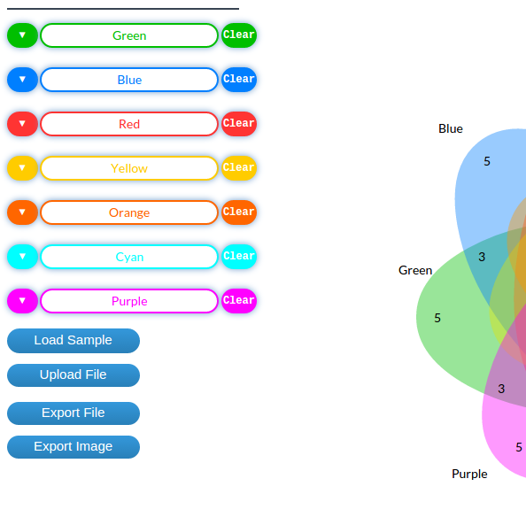
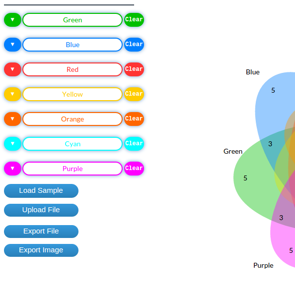

genven DevDoc
genvenn generally can be flexibly used as a library in your web visualisations. It is a D3js project to visualise list/set data comparisons with standard symmetric venn diagrams. The project is aimed at providing an opportunity for biological visualisations.
The main requirements and code functionalities are briefly discussed in this guide further development and customisation.
Requirements and Installation
geneven requires the following npm modules installed:
- d3.js - A JavaScript visualization library for HTML and SVG.
npm install d3
npm install simplesets
geneven's important functions and their code skeletons are briefly discussed in the following sections:
drawCircles
The drawCircles() function draws classic venn diagrams with up to three circles dynamically depending on the value of the the data input made. The function also dynamically interpolates the intersections and labels with each of the three circles.
The function also handles every user interaction events with the visualized diagrams.
function drawCircles () {
// body...
}
drawEllipseBase
The drawEllipseBase() function draws classic symmetric Venn's four-set, five-set and seven-set Venn diagram using ellipses with mathematically adjusted angles of static ellipse diagrams depending on the value of the the data input made.
The function also handles every user interaction events with the visualized venn diagrams.
function drawEllipseBase(cX, cY, rX, rY, rotationAng, fillColor, listName, listContent, eID, tID, eRemove, tRemove, listCount, textX, textY) {
}
Draw Ellipse Intersection Areas
The drawFourSetIntersectionArea(), drawFiveSetIntersectionArea (), and drawSevenSetIntersectionArea functions interpolates intersection paths for the symmetric Venn's four-set, five-set and seven-set Venn diagram using calculated intersection areas with static path diagrams depending on the number of intersecting ellipses in stage from the data input made.
The function also handles every user interaction events with the visualized venn diagrams.
function drawFourSetIntersectionArea () {
// body...
}
function drawFiveSetIntersectionArea () {
// body...
}
function drawSevenSetIntersectionArea () {
// body...
}
drawTriangle
The drawTriangle() function draws classic Six-set Venn diagram made of only triangles. This drawing represents Venn's six-set Venn diagram using triangles with mathematically adjusted angles of static ellipse diagrams depending on the value of the the data input made.
The function also handles every user interaction events with the visualized venn diagrams.
function drawTriangle (d, fillcolor, textX, textY, listName, listContent, trID, tID, listCount, trRemove, tRemove) {
// body...
}
drawTriangleIntersectionArea
The drawTriangleIntersectionArea() function interpolates intersection paths for classic Six-set Venn diagram made of triangles using calculated intersection areas with static path diagrams for the six intersecting triangles in stage from the data input made.
The function also handles every user interaction events with the visualized venn diagrams.
function drawTriangleIntersectionArea () {
// body...
}
exportFile
The exportFile() function exports all possible sets from user provided/uploaded data with up to seven set possibilities into a file.
function exportFile () {
// body...
}
exportImage
The exportImage() function exports all possible sets visualizations in stage in to a .png image downloaded in user default download environment.
function exportImage () {
// body...
}
uploadFile
The uploadFile() function uploads sample data provided by attaching data file with JSON data standard.
function uploadFile () {
// body...
}
The JSON data standard must be provided as any JSON file (like sample.json), and it should have a structure as follows, document names/list names here sampled as "DESeq", “edgeR”, … can be changed to any user list set requirements:
//genelist.json
{
"DESeq": ["G000001", "G000002", "G000003", "G000004", "G000005"],
"FQ": ["G000001", "G000002", "G000003", "G000007", "G000008"],
"RPKM": ["G000001", "G000002", "G000003", "G000004", "G000012"],
"TC": ["G000001", "G000002", "G000003", "G000006", "G000004"],
"TMM": ["G000001", "G000002", "G000003", "G000007", "G000008"],
"UQ": ["G000001", "G000002", "G000003", "G000005", "G000004"],
"edgeR": ["G000001", "G000002", "G000003", "G000006", "G000008"]
}